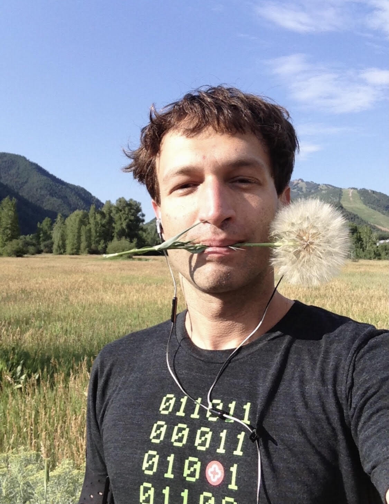

Smile - Invent - Build - Care - Empower - Evolve

Hi, I’m Ron
Welcome :)
I like inventing new things, building stuff (and growing companies), investing in great people with big ideas who love getting things done (well) and who care a lot. I also love writing & speaking about topics that really matter (both fun and serious), and teaching/learning particularly at Stanford.
When I build and run companies
- they are mission driven
- their users matter more than anything else (and they feel it!)
- at peak they help (at least) hundreds of millions of people (and strive to serve billions)
- at their best - they also save lives (and/or make lives significantly better)
- they have a big vision and they transform industries
- they have global reach
- and they always give back
When I write or speak about the more serious matters I focus on
- leadership and changemaking
- AI and machine-learning
- how to build great teams and companies
- and how to live life at its healthiest best
And when I speak and write about the lighter stuff I focus on
I love inventing, especially when the solutions I create can solve hairy audacious human challenges and have the potential to help millions of people everywhere:
- HOPES™ (the first Health Operating System)
- Dr. A.I. (an artificial intelligence platform that triages symptoms and directs to relevant information and the right level of care)
- Talk to Docs and Dr. A.I. on Alexa (the very early voice applications were so much fun!)
- HealthTap S.O.S (for disaster relief)
- AppRx (to help doctors prescribe apps)
- RateRx (thousands of doctors rated the efficacy of medications and treatments)
- DocNow (the first virtual health app on the Apple Watch)
My not-for-profit initiatives bring people together and/or help people live healthier happier lives and are always free for all :)
- HealthTap for Good offered free online doctor consultations to people in need
- FestiHealth helped people find virtual care services, providers, practitioners, and trainers in the early days of COVID-19 and lockdowns
- Live Long and Flourish (LL&F) Club where we discover, try, and validate the most effective health & wellness optimization solutions.
- TEDx Silicon Valley was one of the first independently organized TED events, which I curated and hosted Stanford University, and featured among others (then) up-and-comers Peter Thiel and Reid Hoffman.
- I also produced the first digital health hackathon (Hacking 4 Health) in the early days of smartphones to catalyze innovation in mobile apps with the data the Federal Government had just released.
Sometimes I buy companies when they have great tech and/or great people AND when it’s faster and easier to buy than build (but honestly, building is always more fun!)
I’ve traveled in 81 countries on 6 continents, and I’m still on track to fulfilling my lifelong goal of visiting all the countries around the world and doing good for people who live in them. Feel free to ask me about my moon-expedition plans!
I grow fruit trees and flowers (yes, I was able to successfully grow banana trees in Silicon Valley ;) alongside 12 other fruit varieties; I love cooking and hosting at home especially with/for friends and family (deliciously healthy and fun!); I enjoy running outdoors and working out every day (LMK if you’d like to join :)) and needless to say, I’m a bit of a health nut… And finally, I’m looking for a new pup (Do you know a fun loving Golden Retriever mom?)
…and if you’d still like to learn about me even more, you can find more details on the Ron Gutman FestiHealth page, or just hit me up in one of the clubs I’m running on ClubHouse (The Smiling & Positivity Club, the Leadership Reinvented Club, or Reinventing Health\Care Club), or DM me on LinkedIn and let’s chat!